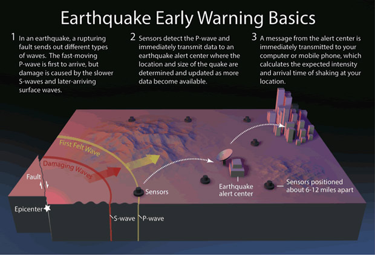

An earthquake is a sudden shaking of the ground caused by two chunks of the earth’s crust sliding past one another.
Although earthquakes are short-lived, usually not lasting more than a minute, they can leave behind incredible damage.
Earthquakes strike suddenly, violently, and without warning, but identifying potential hazards and planning can reduce the threat of damage, injuries and loss of life.
Earthquakes can range from minor tremors to major catastrophic events, and their intensity and impact depend on various factors such as the magnitude,
depth, and location of the quake.
Early Warning signs of an Earthquake
An earthquake is a natural phenomenon that can cause extensive damage and loss of life.
While earthquakes can occur without warning, some warning signs can indicate an impending earthquake. These warning signs include unusual animal behavior
, such as pets acting anxious or birds flying erratically, ground or building movements, such as shaking, swaying, or vibrations, loud rumbling sounds,
changes in water levels, and even flashes of light.
It's important to note that not all earthquakes have warning signs, and the presence of these signs does not necessarily indicate that an earthquake will occur.
Nonetheless, being aware of these warning signs and having an emergency plan in place can help reduce the impact of an earthquake and ensure the safety of
yourself and your loved ones.

Earthquake Alert
Earthquake alerts are warnings given to individuals and communities to prepare for potential earthquakes.
These alerts can be issued by various organizations, such as the United States Geological Survey (USGS), local governments, and emergency management agencies.
There are different types of earthquake alerts, including early warning systems that detect the first seismic
waves of an earthquake and send alerts to people in the affected area, allowing them to take protective measures before the main shock hits.
Another type of earthquake alert is a tsunami warning, which is issued when an earthquake occurs under the ocean and may trigger a tsunami.
It is important to know the maps for hazards because they provide critical information about potential hazards in a specific geographic area.
Hazard maps can identify areas that are prone to natural disasters, such as earthquakes, floods, hurricanes, landslides, and wildfires,
and provide information about the likelihood and potential impact of these events. For example, if you live in an earthquake-prone area,
you can ensure that your home is earthquake-resistant and create an emergency plan to protect yourself and your loved ones.